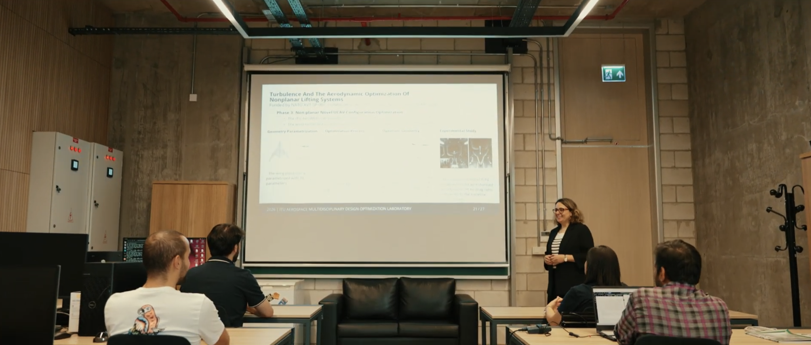
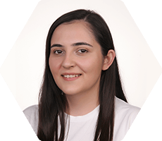
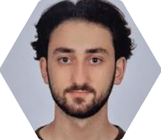
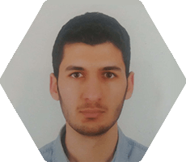
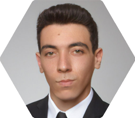
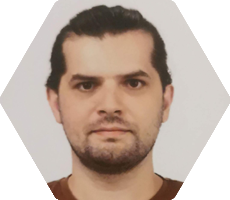
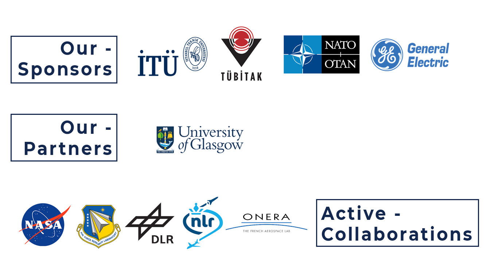

1
Research Publications
AeroMDO Lab's purpose is to develop leading-edge aerospace & defense technology and to move these out of the lab into the real world.
DISCOVERThe establishment of AeroMDO Lab actually dates back to the founding of the Multidisciplinary Optimization Group by Prof. Nikbay in 2006. AeroMDO Lab officially opened in the Faculty of Aeronautics and Astronautics in 2019.

Our current research interests mainly focus on a number of disciplines and techniques:
AeroMDO Team aims to train highly qualified researchers ambitious for the core values such as being a pioneer and society-oriented. We work hard to convert scientific knowledge into the leading aerospace & defense technology with academic, industrial, national, and international collaborations.
By focusing on needs-based advanced knowledge, we develop and integrate cutting-edge tools in the field of computational aerodynamics, structural mechanics and acoustics, with the aid of multidisciplinary optimization techniques for robust design solutions.
We thrive as we spread our research outcomes and accomplishments originating from our university lab to the world, collaborate with industry & public sectors and international institutions, and publish in prestigious journals and proceedings.
Turkish Aerospace Industries Funding Program
Sep 2026 - Present
GE Global Services GmbH UK Branch
Sep 2025 - Sep 2026 (On-going)
TUBITAK 1001 Scientific and Technological Research Projects Funding Program
Apr 2023 - Apr 2026
Turkish Aerospace Industries Funding Program
Dec 2023 - Dec 2025
GE Global Services GmbH UK Branch
Sep 2024 - Sep 2025
Turkish Aerospace Industries Funding Program
Sep 2024 - May 2025
ITU-BAP Scientific Research Program
Dec 2022 - Dec 2024
Reliability and robustness requirements of aerospace engineering systems are of major importance and need to be assessed accurately and efficiently during the early phases of the design process to ameliorate the certification tasks mandatory for the final design. Numerical assessment of the reliability and robustness of a system is possible with uncertainty quantification (UQ) methods that input the effect of uncertain variables to propagate them to the overall system performance.
Multifidelity approaches to design and analysis for complex systems include both low- and high-fidelity data so as to maximize the accuracy of model estimations while minimizing the cost computationally.
The application areas of these methods can be listed as wing-design optimization, robotic learning, even recently being extended to human-in-the-loop simulation.
Deep learning is an important subfield of machine learning and artificial intelligence (AI) that imitates the way humans gain certain types of knowledge and is inspired by the function of the brain called artificial neural networks.
AIAA Journal of Aerospace Information Systems
2026
Compares machine-learning-based multifidelity methods on aerospace problems: sonic boom prediction with the JAXA Wing–Body model and aeroelastic datasets from the undeflected Common Research Model-13.5 wing. A novel two-step multifidelity support vector regression is proposed as an alternative to neural-network-based multifidelity models and compared with existing multifidelity deep neural networks.
DOI BACKAerospace Science and Technology, Vol. 177, Part A, 112285
2026
Multidisciplinary design optimization of a novel non-planar UCAV developed from a flying-wing baseline, maximizing aerodynamic efficiency at Mach 0.8 and 11,000 m under lift, drag, airfoil thickness and radar cross-section constraints. A constrained efficient global optimization with KPLS-enhanced Kriging explores a 20-dimensional design space, reaching 44.55% higher aerodynamic efficiency than the baseline.
DOI BACKArchives of Computational Methods in Engineering, Vol. 33, pp. 2969-3000
2026
Introduces a benchmarking framework for multifidelity optimization: a suite of analytical benchmark problems capturing high dimensionality, multimodality, discontinuities and noise; metrics for optimization effectiveness and global approximation accuracy; and a comparison of several families of multifidelity methods. The benchmark suite is publicly available for Matlab, Fortran and Python.
DOI BACKCEAS Aeronautical Journal, Vol. 17, pp. 567-593
2026
Optimizes the geometry of a generic M219 weapon-bay cavity for aerodynamic and aeroacoustic criteria using constrained Bayesian optimization. Low-fidelity Spalart–Allmaras simulations on a coarse mesh drive the optimization, while IDDES on a fine mesh validates the optimized geometries using the OpenFOAM HISA solver. The process achieved about a 5% (7–10 dB) reduction in OASPL and SPL values.
DOI BACKWCCM 2026 / ECCOMAS 2026, Munich, Germany
2026
Proposes combining Physics-Informed Neural Networks (PINNs) with classical data-driven neural networks to build surrogate models for design fields with sparse data. Applied to a nine-parameter turbine cascade stator blade design space, only 10% of the samples are used for data informing and 70% for physics informing, with PirateNet as the architecture and SOAP as the optimizer.
BACKWCCM 2026 / ECCOMAS 2026, Munich, Germany
2026
Presents a mixture-of-experts multifidelity framework that decomposes the high-fidelity response into a low-fidelity base model and a residual field approximated by local Gaussian process experts. It achieves near-linear training scaling with accuracy comparable to Co-Kriging, validated on 2D–15D benchmarks, a high-aspect-ratio wing and a 29-dimensional sonic boom prediction problem.
BACKWCCM 2026 / ECCOMAS 2026, Munich, Germany
2026
Develops a multifidelity stochastic framework to assess the robustness of a 40-passenger low-boom supersonic airliner under operational and atmospheric uncertainties. SU2 and PANAIR provide high- and low-fidelity solutions and ITUBOOM computes ground boom loudness; the two-step MFSVR method is compared with Co-Kriging, and Sobol’ indices quantify each parameter’s contribution.
BACK15th ERCOFTAC Workshop on Direct and Large Eddy Simulation, Delft, the Netherlands
2026
Current Members
Prof. Dr. Melike Nikbay
Principal Investigator
Dr. Pranesh Chandrasekaran
Post-Doctoral Researcher

Dilan Kilic
Research Assistant

Murat Kurnaz
Research Assistant
Part-Time Members

Sihmehmet Yildiz
Graduate Researcher

Emre Guler
Research Assistant

Berkay Pirlepeli
Graduate Researcher
Enes Cakmak
Graduate Researcher
Burak Berkan Bedir
Graduate Researcher
Emir Han Tokel
Undergraduate Student
Berke Bayram
Undergraduate Student

Our continuous goal is to establish and develop Public-University-Industry collaborations by employing both national and international funding resources.
You can stop by our office for a cup of coffee and just use the contact form for any questions and inquiries
Copyright © 2026. All Rights Reserved. Designed by AeroMDO